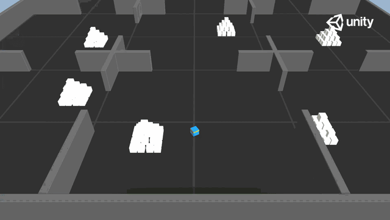

PPO + RND agent navigating the Pyramids environment - pressing the button to spawn the pyramid, knocking it over, and reaching the gold brick
Trained a PPO agent with Random Network Distillation to solve a multi-step manipulation task in Unity ML-Agents' Pyramids environment. The agent must discover and press a button to spawn a pyramid, navigate to it, and knock it over all from a sparse reward signal where standard PPO alone fails to explore effectively.
The Pyramids task is a classic sparse-reward problem. The agent only receives meaningful reward at task completion, there is no dense reward shaping guiding it step by step. A standard PPO agent in this setting struggles to discover the correct sequence of actions through random exploration alone. It needs a reason to explore beyond what it already knows.
This is where intrinsic motivation changes the approach. Rather than waiting for the environment to reward correct behavior, the agent is also rewarded for encountering states it has not seen before, pushing it to actively investigate its environment instead of repeating familiar trajectories.
RND works by maintaining two neural networks with identical architectures. A randomly initialized target network (frozen, never updated) and a predictor network trained to match the target network's output. For any given state, the predictor error is high on unfamiliar states and low on familiar ones. This prediction error becomes the intrinsic reward, a direct signal for novelty.
The total reward combines extrinsic reward from the environment (task completion) and intrinsic reward from the RND prediction error (novelty signal), driving the agent to balance task execution with active environment exploration.
No sub-task rewards are given. The agent must discover this entire sequence through exploration.
On-policy policy gradient with clipped surrogate objective
Intrinsic curiosity via target-predictor network prediction error
3D physics simulation environment and agent training toolkit
Model export format for deployment and browser playback
The most important insight from this project is understanding the difference between dense and sparse reward environments, and why standard on-policy algorithms break down in the latter. RND offers an elegant solution. Rather than redesigning the reward function, it adds a self-supervised curiosity signal that emerges purely from the agent's own uncertainty about unseen states.
Understanding how the prediction error maps to genuine novelty, and how to balance intrinsic versus extrinsic reward scaling during training, was the core technical challenge of this project.
Trained model and training metrics published on HuggingFace. Play the agent live in your browser via Unity ML-Agents Spaces.
Username: Kaushik23 ; Model ID: Kaushik23/RND-Pyramids